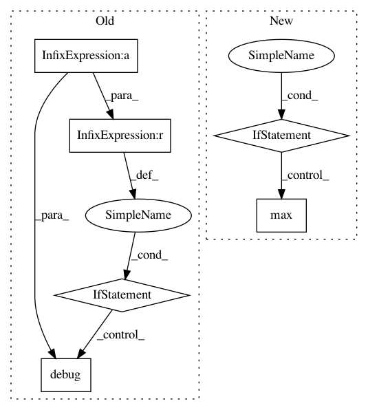

1a1d444b0d02c0c484decfb03bf57b18d4af0e85,smac/epm/rfr_imputator.py,RFRImputator,impute,#RFRImputator#Any#Any#Any#Any#,57
Before Change
y_mean = y_mean[:,0]
imputed_y = truncnorm.stats(a=(censored_y - y_mean) / y_stdev,
b=(self.cutoff * 10 - y_mean) / y_stdev,
loc=y_mean,
scale=y_stdev,
moments="m")
imputed_y = numpy.array(imputed_y)
if sum(numpy.isfinite(imputed_y) == False) > 0:
// Replace all nans with threshold
self.logger.debug("Going to replace %d nan-value(s) with "
"threshold" %
sum(numpy.isfinite(imputed_y) == False))
imputed_y[numpy.isfinite(imputed_y) == False] = self.threshold
if it > 0:
// Calc mean difference between imputed values this and last
// iteration, assume imputed values are always concatenated
// after uncensored values
After Change
nans = np.isfinite(imputed_y) == False
n_nans = sum(nans)
if n_nans > 0:
// Replace all nans with maximum of predicted perf and censored value
// This case should hopefully never happen -- therefore it is a warning
self.logger.warning("Going to replace %d nan-value(s) with "
"max(captime, predicted mean)" % n_nans)
imputed_y[nans] = max(censored_y[nans], y_mean[nans])
if it > 1:
// Calc mean difference between imputed values this and last
// iteration, assume imputed values are always concatenated
// after uncensored values
In pattern: SUPERPATTERN
Frequency: 3
Non-data size: 6
Instances
Project Name: automl/SMAC3
Commit Name: 1a1d444b0d02c0c484decfb03bf57b18d4af0e85
Time: 2016-12-19
Author: marius.rks@googlemail.com
File Name: smac/epm/rfr_imputator.py
Class Name: RFRImputator
Method Name: impute
Project Name: ray-project/ray
Commit Name: 63594c537064d5cc47179169df6e6e6defa613d6
Time: 2021-03-25
Author: ed.nmi.oakes@gmail.com
File Name: python/ray/serve/backend_state.py
Class Name: BackendState
Method Name: _scale_backend_replicas
Project Name: deepfakes/faceswap
Commit Name: 3159cb6eca130e9b6e2de7762abab1c173923007
Time: 2019-08-28
Author: 36920800+torzdf@users.noreply.github.com
File Name: lib/gui/control_helper.py
Class Name: AutoFillContainer
Method Name: rearrange_columns